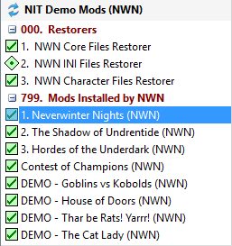
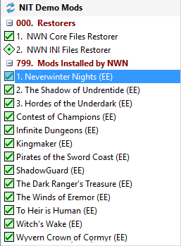
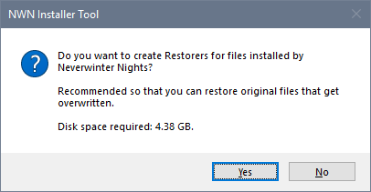
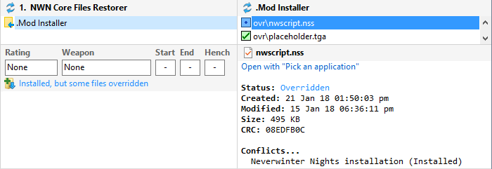
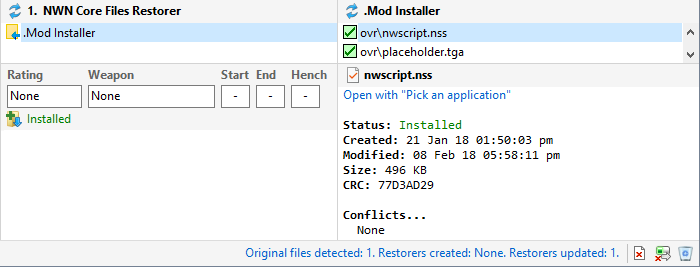

Original Restorers are Installer Tool defined Restorers containing files installed by the Neverwinter Nights or Enhanced Edition setup program.


When you load a Profile for the first time, answer Yes to the original Restorer question (unless you need to Deal with existing installed Mods).

You can also click Create Original Restorers from the Manage menu at any time to create or update the initial Original Restorers.
This is only required after Beamdog has updated Enhanced Edition files.


Create Original Restorers